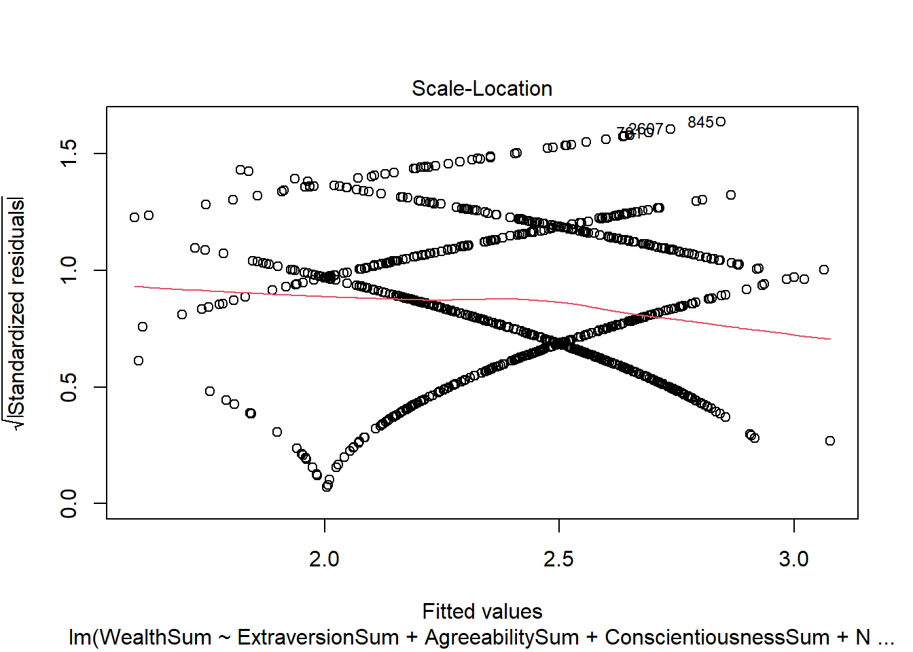

The big five personalities are traits that some researchers and psychologists use to characterize people. I will be using these big five traits to run predictions on which trait is most likely to impact wealth.
This analysis will question, The personality traits of self-made and inherited millionaires study linked below. The authors and researchers of the study claim high conscientiousness is the most important characteristic of wealth success. However, this paper will argue that the most important characteristic of wealth success is actually low neuroticism.
A multiple linear regression model will be used to see which of the big five has the most statistical significance to wealth. In other words, a regression model will reveal which personality trait is the strongest predictor of wealth.
This analysis takes data from a Life Psyche survey that was administered online to people getting paid to complete the survey. People put answer questions meant to rank their personality type. This analysis uses the sum of these questions as data points.
The linear regression models will use the following predictors from the Life Psyche data set:
To predict the response:
Fig. 1
Fig. 2
Figures 1 and 2 are constructed as scatterplots. The scatterplots have points dispersed using “jitter” in ggplot. This is due to the survey questions using discrete rankings rather than a continuous scale. The jitter function allows us to see how many points are congregated. Secondly, there is a stem plot to gauge where the majority of points lie. Finally, the color of the points indicate a person’s intelligence, measured by math and English SAT scores.
In figure 2 the density of the congregated points show that as neuroticism decreases, wealth increases. The opposite goes for conscientiousness. In figure 1 as conscientiousness decreases, wealth increases.
From the two scatterplots there is not enough differentiation to see whether neuroticism or conscientiousness is most correlated to wealth. From the plots alone, we do not have the justification to prove that neuroticism is a higher indicator of wealth than consciousness.
The regression will first be run using 30% of the data as a test set. This is a sample size of 859 observations. Eventually, it will be tested against the other 70% (2,003 observations) of the data set. These 2,003 observations are refered to as the training set. This method of splitting the data will verify the results. If the two sets of data that do not share any of the same responses have the same p-value rankings, then we can most likely trust our analysis.
A regression model is useful in this scenario since conscientiousness is correlated with wealth in a positive direction whereas neuroticism is correlated with wealth in a negative direction.
We will be using the big five as predictors, and wealth as response for the model. Based on the p-value the big five can be rated from strongest correlation to wealth, to weakest.
##
## Call:
## lm(formula = WealthSum ~ ExtraversionSum + AgreeabilitySum +
## ConscientiousnessSum + NeuroticismSum + OpennessSum, data = bigFive_test)
##
## Residuals:
## Min 1Q Median 3Q Max
## -2.8438 -0.6972 0.2225 0.7596 2.1791
##
## Coefficients:
## Estimate Std. Error t value Pr(>|t|)
## (Intercept) 2.97442 0.35968 8.270 5.27e-16 ***
## ExtraversionSum -0.01243 0.01479 -0.840 0.40099
## AgreeabilitySum -0.01617 0.01685 -0.959 0.33764
## ConscientiousnessSum 0.04924 0.01608 3.063 0.00226 **
## NeuroticismSum -0.06028 0.01432 -4.210 2.83e-05 ***
## OpennessSum -0.03168 0.01505 -2.105 0.03556 *
## ---
## Signif. codes: 0 '***' 0.001 '**' 0.01 '*' 0.05 '.' 0.1 ' ' 1
##
## Residual standard error: 1.069 on 836 degrees of freedom
## (17 observations deleted due to missingness)
## Multiple R-squared: 0.06214, Adjusted R-squared: 0.05654
## F-statistic: 11.08 on 5 and 836 DF, p-value: 2.378e-10Fig. 3
Figure 3 is a regression model that uses all big five personality traits to predict wealth.
The strongest correlated variables to wealth:
Neuroticism is the best predictor of wealth. It is a better predictor than conscientiousness. Therefore we can reject the study Personality traits of self-made and inherited millionaires .
##
## Call:
## lm(formula = WealthSum ~ ExtraversionSum + AgreeabilitySum +
## ConscientiousnessSum + NeuroticismSum + OpennessSum, data = bigFive_test)
##
## Residuals:
## Min 1Q Median 3Q Max
## -2.8438 -0.6972 0.2225 0.7596 2.1791
##
## Coefficients:
## Estimate Std. Error t value Pr(>|t|)
## (Intercept) 2.97442 0.35968 8.270 5.27e-16 ***
## ExtraversionSum -0.01243 0.01479 -0.840 0.40099
## AgreeabilitySum -0.01617 0.01685 -0.959 0.33764
## ConscientiousnessSum 0.04924 0.01608 3.063 0.00226 **
## NeuroticismSum -0.06028 0.01432 -4.210 2.83e-05 ***
## OpennessSum -0.03168 0.01505 -2.105 0.03556 *
## ---
## Signif. codes: 0 '***' 0.001 '**' 0.01 '*' 0.05 '.' 0.1 ' ' 1
##
## Residual standard error: 1.069 on 836 degrees of freedom
## (17 observations deleted due to missingness)
## Multiple R-squared: 0.06214, Adjusted R-squared: 0.05654
## F-statistic: 11.08 on 5 and 836 DF, p-value: 2.378e-10Fig. 4
The regression model above (Figure 4) uses the other 70% of the data. The rankings of statistical significance, measured by the p-value, are the same as in Figure 3. This confirms that neuroticism is the best predictor of wealth.
When we use both the plots and the regression model together, we get a much better understanding of the strength and direction of the correlation between wealth, neuroticism and consciensouness. In the study, Personality traits of self-made and inherited millionaires, the researchers are very close to being accurate. If the study were to adjust the text, to speak in terms of, “which variable is most positively correlated to wealth,” then the analysis would be correct.
Ultimately, the strongest predictor of wealth is neuroticism. Therefore a person’s level of neuroticism is more significant to income than any other trait.
The plot below uses the data from Figure 3 to test normality. In order to run an accurate prediction from a multiple linear regression model, the data must follow four assumptions. The assumptions necessary are linearity, independence, normality, and constant variance between the predictor and response.
 Fig. 5
These plots confirm that the data is in fact normally distributed.
##
## Call:
## lm(formula = WealthSum ~ ConscientiousnessSum + SAT_MATH + SAT_ENG,
## data = bigFive)
##
## Residuals:
## Min 1Q Median 3Q Max
## -2.9164 -0.6448 0.2362 0.6619 2.1516
##
## Coefficients:
## Estimate Std. Error t value Pr(>|t|)
## (Intercept) 1.0498259 0.1766777 5.942 3.47e-09 ***
## ConscientiousnessSum 0.0599715 0.0091920 6.524 9.22e-11 ***
## SAT_MATH 0.0014179 0.0002450 5.787 8.66e-09 ***
## SAT_ENG -0.0001236 0.0002695 -0.458 0.647
## ---
## Signif. codes: 0 '***' 0.001 '**' 0.01 '*' 0.05 '.' 0.1 ' ' 1
##
## Residual standard error: 1.015 on 1549 degrees of freedom
## (1309 observations deleted due to missingness)
## Multiple R-squared: 0.05705, Adjusted R-squared: 0.05523
## F-statistic: 31.24 on 3 and 1549 DF, p-value: < 2.2e-16Fig. 6
##
## Call:
## lm(formula = WealthSum ~ NeuroticismSum + SAT_MATH + SAT_ENG,
## data = bigFive)
##
## Residuals:
## Min 1Q Median 3Q Max
## -2.8245 -0.6280 0.2285 0.6531 2.1436
##
## Coefficients:
## Estimate Std. Error t value Pr(>|t|)
## (Intercept) 2.106e+00 1.647e-01 12.784 < 2e-16 ***
## NeuroticismSum -5.223e-02 7.655e-03 -6.823 1.27e-11 ***
## SAT_MATH 1.390e-03 2.449e-04 5.677 1.63e-08 ***
## SAT_ENG -2.671e-05 2.690e-04 -0.099 0.921
## ---
## Signif. codes: 0 '***' 0.001 '**' 0.01 '*' 0.05 '.' 0.1 ' ' 1
##
## Residual standard error: 1.014 on 1549 degrees of freedom
## (1309 observations deleted due to missingness)
## Multiple R-squared: 0.05941, Adjusted R-squared: 0.05759
## F-statistic: 32.61 on 3 and 1549 DF, p-value: < 2.2e-16Fig. 7
##
## Call:
## lm(formula = WealthSum ~ NeuroticismSum + ConscientiousnessSum +
## SAT_MATH + SAT_ENG, data = bigFive)
##
## Residuals:
## Min 1Q Median 3Q Max
## -2.8300 -0.6488 0.1978 0.6651 2.1718
##
## Coefficients:
## Estimate Std. Error t value Pr(>|t|)
## (Intercept) 1.594e+00 2.256e-01 7.068 2.37e-12 ***
## NeuroticismSum -3.537e-02 9.175e-03 -3.855 0.000120 ***
## ConscientiousnessSum 3.642e-02 1.100e-02 3.309 0.000956 ***
## SAT_MATH 1.377e-03 2.441e-04 5.641 2.01e-08 ***
## SAT_ENG -7.754e-05 2.686e-04 -0.289 0.772886
## ---
## Signif. codes: 0 '***' 0.001 '**' 0.01 '*' 0.05 '.' 0.1 ' ' 1
##
## Residual standard error: 1.011 on 1548 degrees of freedom
## (1309 observations deleted due to missingness)
## Multiple R-squared: 0.06602, Adjusted R-squared: 0.06361
## F-statistic: 27.36 on 4 and 1548 DF, p-value: < 2.2e-16Fig. 8
Copyright © 2016 Skynet, Inc. All rights reserved.